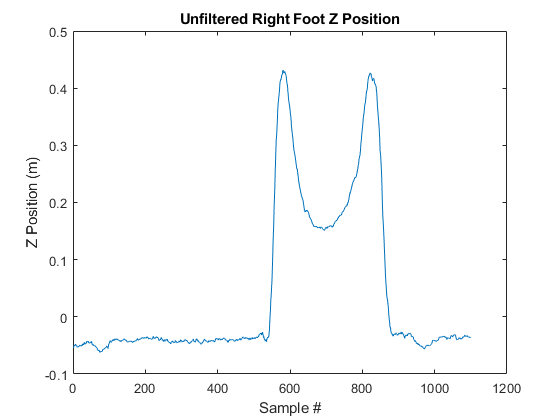
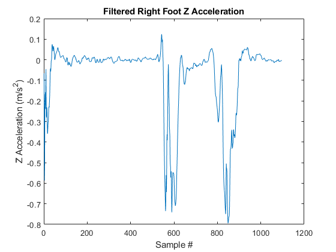
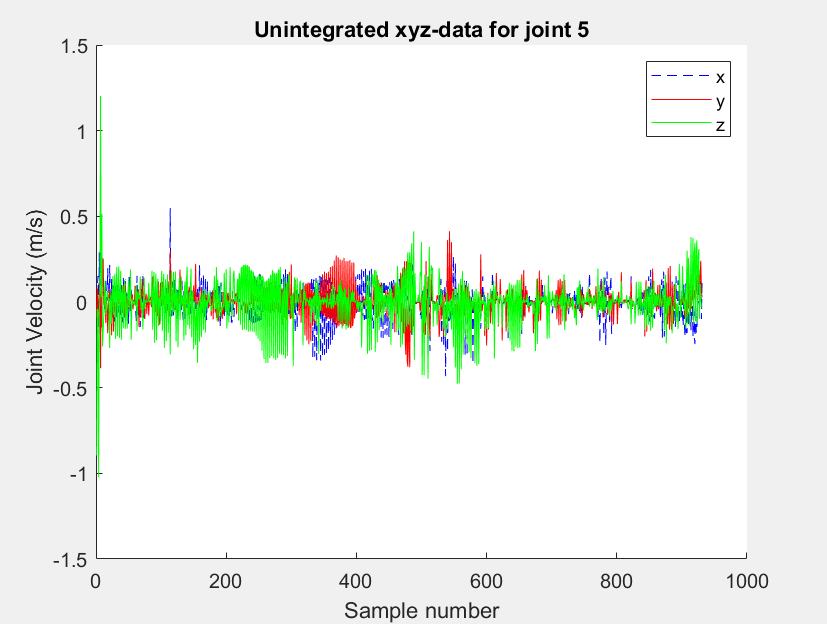
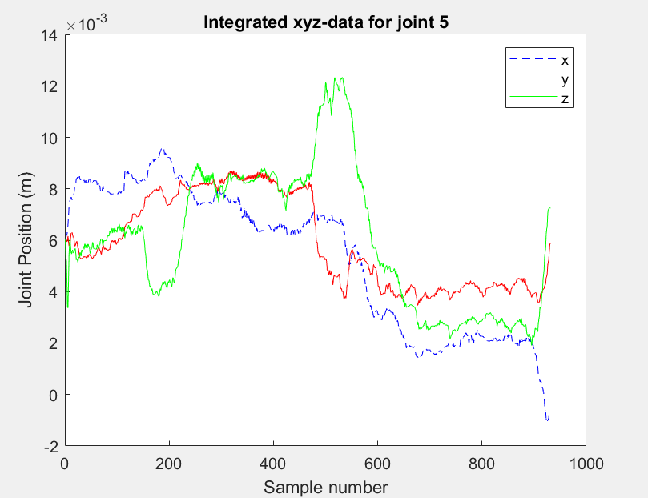

The phase and magnitude of a first-order butterworth filter response with a 1Hz cutoff frequency |
Low-back loading looks into the various forces that interact with the lower back. It uses the magnitude and the location of the forces to see the impact it may have on the human body. This, particularly, is important and useful within the medical field due to the large amounts of procedures on the spine and lower back. Specific forces on the lower back may result in pain and may cause future complications to arise. Thus, these procedures require close monitoring of the lower back and how various forces are applied to it on a day-to-day basis. Evaluating low-back loading can help evaluate the outcomes of various surgical and other clinical procedures and help better the understanding of various medical procedures.
Current procedure of evaluating posture and low-back loading requires a Kinect and a laptop with a dedicated GPU. While this works within a clinical setting, it is impractical outside the clinic. Shipping the Kinect and laptop proves to be very inefficient and expensive. Thus, this project will be improving the efficiency by implementing the data collection with an iPad and ARKit 3. In order to validate that the iPad can replace the Kinect, the data collected from ARKit 3 must be validated. Futhermore, since the iPad only has one camera, a model must be implemented in order to address the joints that are hidden. This project focuses on creating an app to collect the data and validating various components of data collected, such as the consistency of length of the body parts and reducing noise to check the joint acceleration
There are two popular methods of assessing human body motion: Azure Kinect and radiographs. However, they have their own limitations, so our project is focused on finding another solution that minimizes cost and space while not affecting its effectiveness to correctly address a person’s joint information. The current method of using Azure Kinect costs $400 for the sensor and $2000 or more for a computer with a high-performance GPU. Radiography machines can easily cost more than $50,000. We want to significantly reduce the cost. Futhermore, radiography equipment requires a dedicated space where patients must visit for body examination. Rather, we want a solution that allows doctors to visit patients or even patients to self-check.
In order to make low-back loading more cost effective and space efficient, we decided to use an iPad Pro and its camera to track the person's limb position. An iPad Pro only costs $800 and does not require a dedicated computer. Futhermore, an iPad Pro can be easily moved and shipped for various patients to use at the comfort of their own homes. Since we are using a single camera on an iPad Pro to reduce the cost, we cannot track the joints that are hidden from the camera. Futhermore, the camera introduces noise to the data, which adds inconsistency to the forces we are trying to find. Once we collected the data, we applied a filter in order to reject outliers, which reduces the noise. We analyzed the filtered data to validate that the iPad Pro can be a valid replacement for the Azure Kinect. By validating the data, we illustrate that we can achieve basic functionality of correctly tracking a person's limb positions
The project was split into two major components: data aquistion and data processing.
Data collection was performed using ARKit 3 motion tracking software. This software works with iOS devices, enabling in-home motion tracking. It relies upon a body tracking configuration object to enable the relevant body tracking setup. A body anchor object and its children then hold movement data for each part of the body, including transformation matrices relative to the anchor, which is the hip joint. The body anchor object and its children are defined by a skeleton object. By using video data to map the skeleton to the subject, ARKit is able to produce 3D position data for each body part in real time. Our project extracts and exports this data for processing.
The data was analyzed in MATLAB. Once the data was imported, we first checked the length of the limbs to verify that ARKit 3 uses a rigid-body model. This was done by simply calculating the distance between two joints. The next component of the data analysis is to apply a low-path butterworth filter. The butterworth filter is a type of signal processing filter that is designed to to have a frequency response as flat as possible to the cutoff frequency. This was applied to the position, velocity, and acceleration data. Futhermore, we integrated the velocity in order to determine that the differentation done before was correct.
Since all transformation matrices are in spatial frame, the translation part can be considered as the coordinate with the origin at hip joint. We can find the distance between joints by finding the norm of a vector between those joints. Below are the joint lengths of Brian:
As you can see from abvoe, these lengths stay consistent throughout all time stamps, thus we verified ARKit 3 uses a rigid-body model. We can now proceed to find the velocity and acceleration by taking derivative, which will be discussed in the Results section.
The app created in order to collect data worked efficiently. The video provided below illustrates the skeleton model that indicated the translation and rotation of the joints. This skeleton moves as the app tracks the person, which helps the user determine whether or not the data is correct on a surface level.
|
The phase and magnitude of a first-order butterworth filter response with a 1Hz cutoff frequency |
|

Z-position of the right foot before butterworth filtering |

Z-position of the right foot after butterworth filtering |

Velocity of the right foot after butterworth filtering |

Acceleration of the right foot after butterworth filtering |
The filtered and differentiated data was then integrated to determine both the best filter that would filter out noise without affecting data trends and without compounding errors, and to verify differentiation. It was found that of the available filters, a second order butterworth filter was most useful.
|

The original position data colorcoded for x, y, z components after butterworth filtering |

Integrated velocity data colorcoded for x, y, z position components |
Due to the iPad Pro camera, there is a significant amount of noise and jitterness within the data. ARKit 3 reacts poorly to hidden limbs and any movement to the iPad during the data collection. Futhermore, since derivatives were applied during the analysis of the data and for the calcuation of the various forces on the joints, the noises that are present are amplified. While the filtering reduces some of the noise present, the filtering also causes changes in the data that may affect the results. Futhermore, there are currently no realistic limit on joint forces. This not only would require a detailed biomechanical solution, but it also would require the subject's strengh and mass in each body part.
In order to reduce the noise in the data, we would like the experiement with different filters and take away any outliers of the data. Since there are currently no realistic limit on joint forces, we would also like the create a dynamic model in order to simulate forces on the body. Futhermore, we would like to transfer all the MATLAB processing on to the iPad. This completely reduces the need for a laptop, which reduces the cost and improves the efficiency of the assesment on low-back loading. Along with trasfering all the data processing onto the iPad, we would also like to output the joint angles on the screen in realtime. This makes the app more user-friendly and helps the user check for any errors while collecting the data.
|
huoshengyu@berkeley.edu Brian is a senior studying bioengineering and EECS at UC Berkeley. His background is in spinal bio-mechanics and mechatronics and is currently involved in bio-mechanics research. He mainly worked on filtering the data and finding the derivatives and the relative transformation from the data. He also helped with the data acquisition by working on the ARKit 3 code. |
hamza.khawaja@berkeley.edu Hamza is a senior studying EECS at UC Berkeley. His background includes Robotics@Berkeley and drone research at Stanford. He lead development of the kinematic model, which was replaced by data obtained from the ARKit3 which provided accurate transformation matrices. He also worked on integrating the velocities and accelerations, and graphing to illustrate those integrations and comparing them to the original unfiltered data. |
|
scott.lim@berkeley.edu Scott is a senior studying mechanical engineering. His background is in mechanical engineering and worked on Automated Guided Vehicles at Samsung. He mainly worked on creating a function that checks the lengths of the joints. Futhermore, he programmed basic functions, such as importing the data into MATLAB, and helped with the integration of velocity and acceleration. |
chenyunusa@berkeley.edu Winnie is a senior studying computer science. Her background is in software engineering and has worked in Qualtrics and Facebook as a software engineer. She mainly worked on the data acquisition by collecting the data and modifying the ARKit 3 data. She also played a managerial role by mainly creating the webstie and slides and helped debug MATLAB code. |
|
cjbumagat@berkeley.edu Catherine is a junior studying EECS at UC Berkeley. Her background is in prototyping and signals and system analysis. While she was not very active due to a family emergency, she helped work on finding the thetas from the quaternion matrices. Futhermore, she helped program an initial version of a kinematic model. |
|